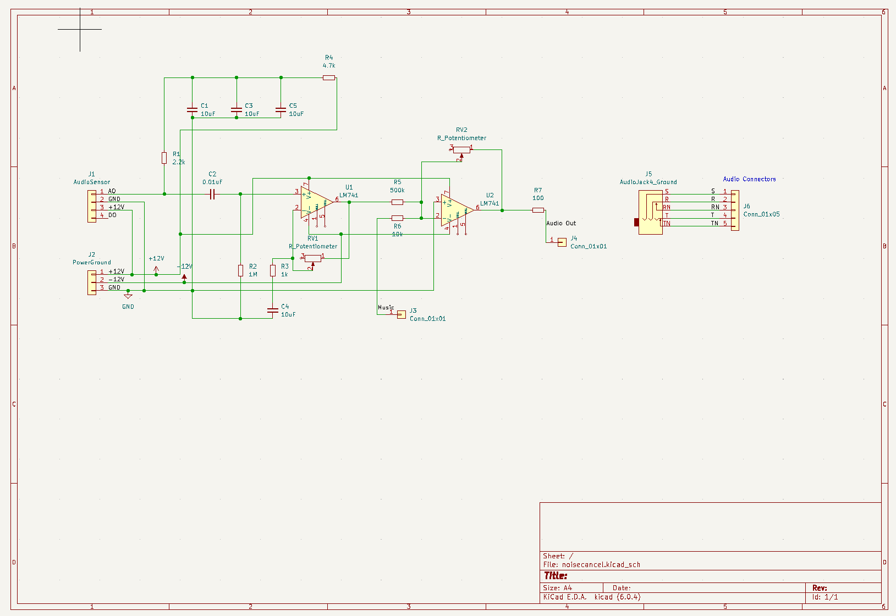
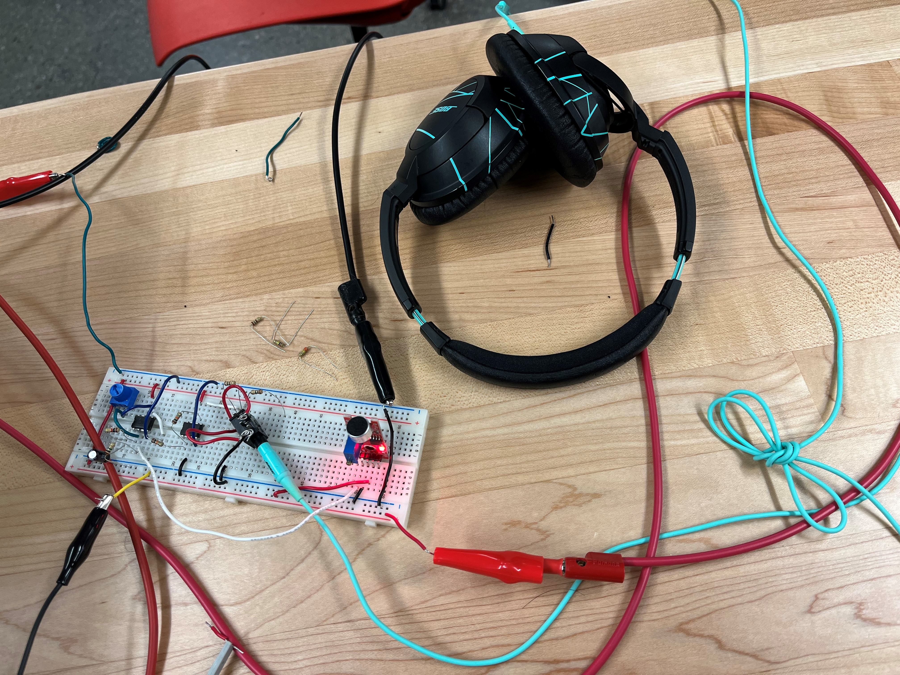
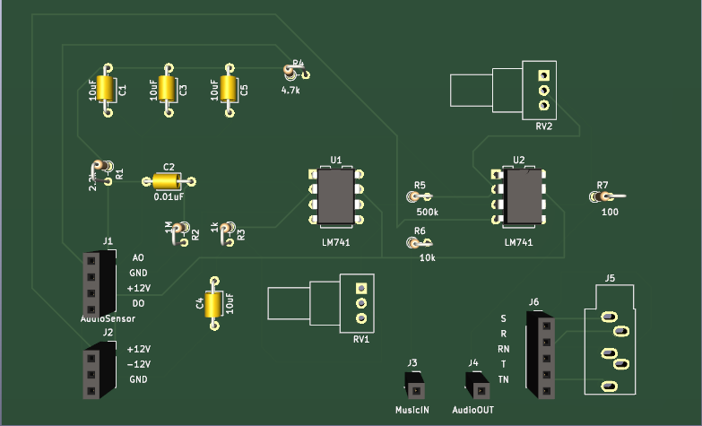
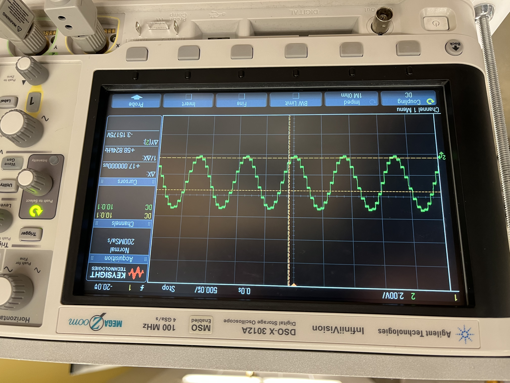

ENEL300 Project Progression


Our project saw lots of changes as we went through each sprint and refined its scope and requirements.
At first, we wanted to use an analog circuit to invert the sound from a microphone, causing noise cancellation when played in earphones.
The image above shows a schematic of our circuit. Also, our breadboard implementation

In order to clean up the circuit and reduce size, I designed a PCB in KiCad, which is shown above.

We also decided to add retro music capabilities using the AVR128DB28. Basically, it plays notes by generating different frequency sine waves using the DAC.

Music output on oscilliscope.
This project helped me learn a lot of technical skills like using the AVR, designing PCB's, basic circuit prototyping, and using benchtop instruments. I also learned Scrum tools like daily standups and sprint planning. This helped to distribute work and keep everyone on track of things.